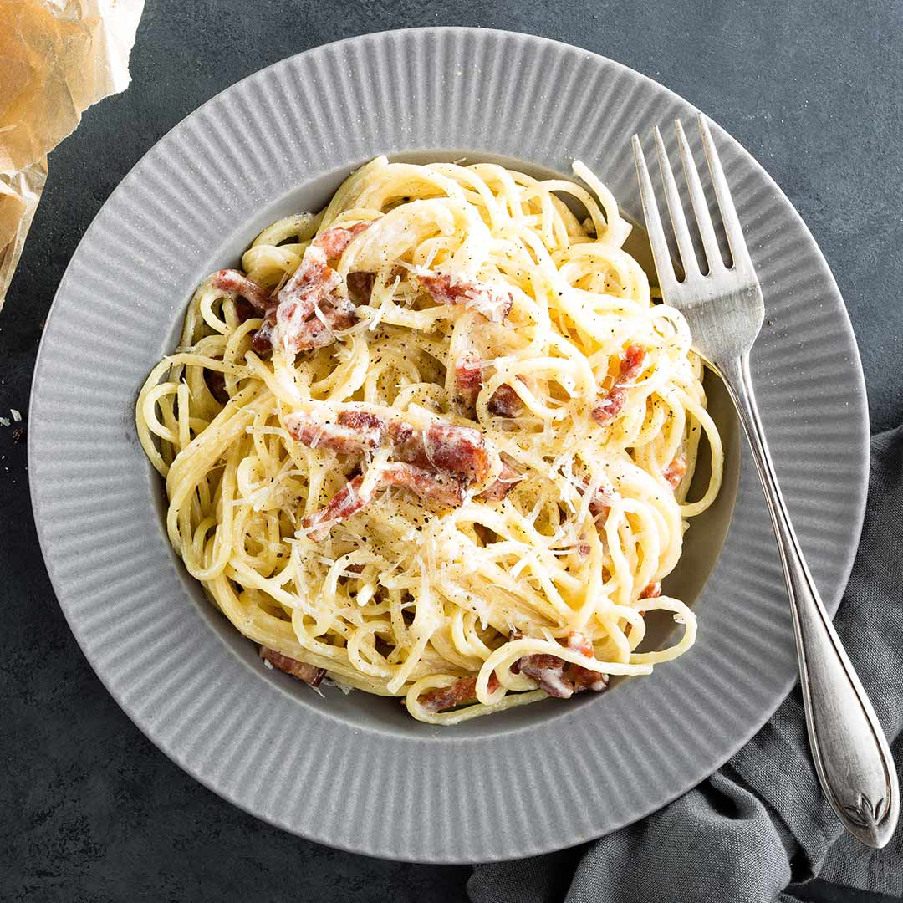

Pasta Carbonara

Description
The classic pasta carbonara.
This is a classic dish, which requires just a few ingredients and can be made quickly.
It's perfect for a busy weekday, and a great comfort food.
Ingredients
- 1 tablespoon of extra virgin olive oil
- 200g piece guanciale (pork cheek), roughly chopped into small strips
- 4 large free-range egg yolks
- 75g grated pecorino romano cheese, and extra for sprinkling over at the end
- ground black pepper
- 400g of tagliatelle
Steps to make
- Bring a large saucepan of salted water to the boil and cook the spaghetti until “al dente.”
- Heat the extra virgin olive oil in a large frying pan, add the guanciale and on a medium heat stir fry until crispy.
- In a small bowl beat egg yolks with pecorino, some salt & pepper. Set aside.
- Drain the spaghetti, reserving some of the pasta water, add the spaghetti to the pan of guanciale, with a little of the pasta water and mix well. Remove pan from the heat, stir in the egg mixture, adding more cooking water if necessary. Serve immediately with some grated pecorino and freshly ground black pepper.